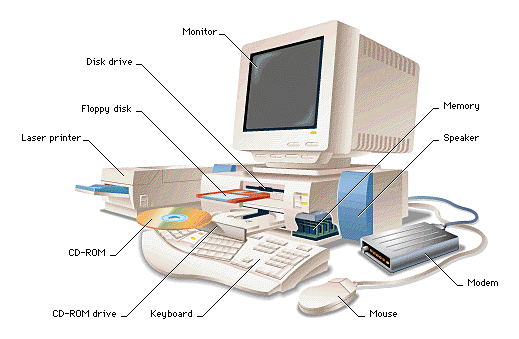

Computer Hardware and
Software
- Hardware =
the physical parts of a computer
- The case containing the computer
- Keyboard
- Terminal
- Mouse
- Etc
- Software =
the computer programs
that you run with a computer
- Web browser
- PC games
- Microsoft Word
- Microsoft Excel
- Etc
|
Computer hardware
- what a normal user sees
Components of the computer
by their functionality:

- Input devices:
allow users to enter input to the computer
(mouse, keyboard, microphone, camera)
- Output devices
allow the computer to display output to the user
(monitor, printer, speaker)
- Input/output devices:
used by the computer to store data and/or communicate with
other computers
(CD-rom, floppy drive, hard drive, modem, network)
- Computer system
(that's the box in the middle of the picture)
|
Computer hardware - what CS255 will show you
We will study
the stuff
that are inside
the computer "box":

Also:
- The different components in the
computer need to
communicate with each other
using electrical signals
- We will study the
the electrical pathways (called "buses")
that connect the
components
|
Computer hardware - what CS255 will show you
A closer look
at the computer components
and their interconnections :
Can you see
the connections (jagged lines)
that connect the
components (squares) of the computer ?
❮
❯